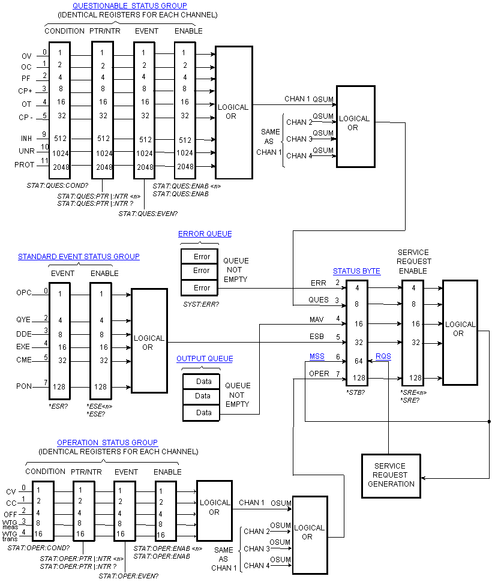

Hold the mouse cursor over a command to view the full syntax statement.
Status register programming lets you determine the operating condition of the instrument at any time. The instrument has three groups of status registers; Operation, Questionable, and Standard Event. The Operation and Questionable status groups each consist of the Condition, Enable, and Event registers as well as NTR and PTR filters.
The Status subsystem is also programmed using Common commands. Common commands control additional status functions such as the Service Request Enable and the Status Byte registers.
Refer to the Status System diagram.
|
|
Hold the mouse cursor over a command to view the full syntax statement. |
Status Commands |
Related Common Commands |
|
STATus:QUEStionable:CONDition? STATus:QUEStionable:NTRansition STATus:QUEStionable:NTRansition? |
